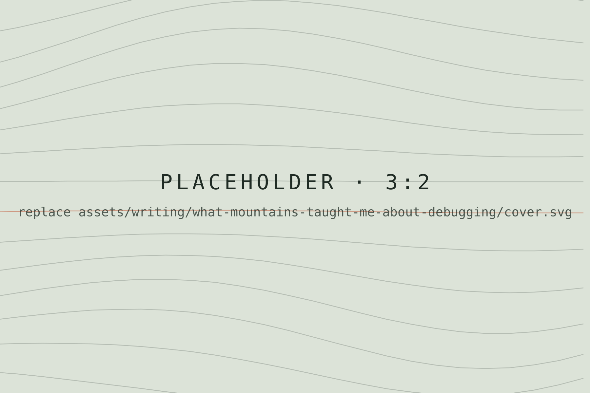
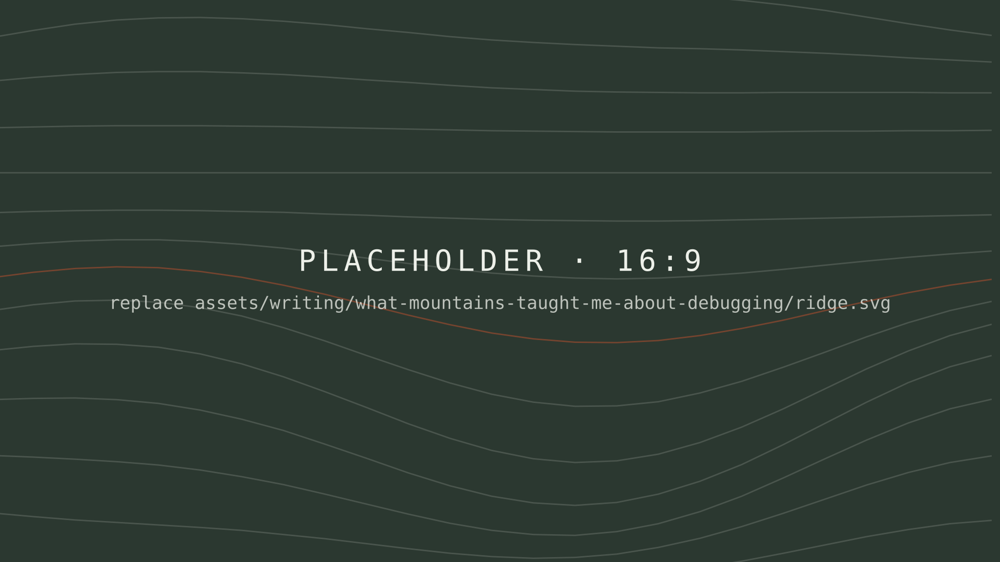

What Mountains Taught Me About Debugging
Example essay — replace with your own writing

This is where your opening paragraph goes — the hook that pulls a reader in. The first paragraph is set slightly larger than the rest, so it works best as one or two strong sentences.
Keep paragraphs fairly short. The text column is deliberately narrow, around sixty-five characters a line, which is comfortable for long reading but makes very long paragraphs feel heavy.
A section heading
Use ## for section breaks within a piece. They pick up the same condensed display type as the rest of the site, so the essay stays visually connected to the homepage.


Photographs placed between paragraphs give the reader a breath. A wide image like the one above extends past the text on large screens and fills the width on phones.
A smaller subheading
Use ### for a sub-section inside a longer part of the essay.


Wrap up with a short closing paragraph.